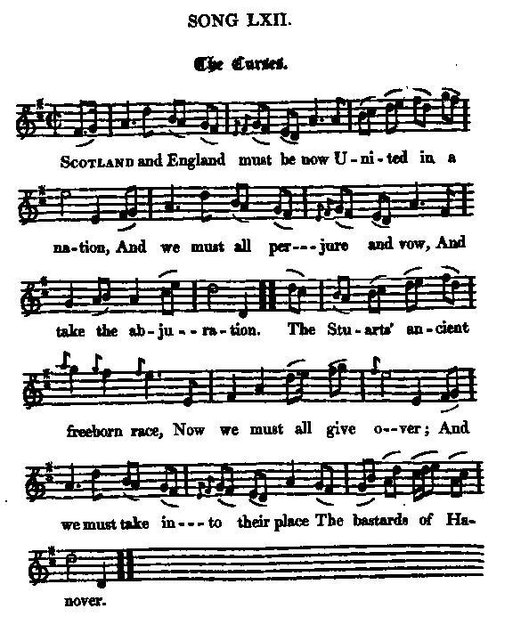

Two Songs to the same tune
1° The curses
Les malédictions
A song on the Union - Un chant sur l'Union
Tune - Melodie"The bonny boatman"
from Hogg's "Jacobite Reliques" part I, N° 62
Sequenced by Christian Souchon
|
To the tune
THE BONNY BOATMAN: Scottish. The air appears in Thomson's Orpheus Caledonius (1725), where it is ascribed to Queen Mary's secretary David Rizzio, a renowned lutenist and singer (murdered at the hands of his political rivals). Thomson removed the ascription from his second edition and it is in some doubt whether Rizzio had anything to do with the tune. Source: "The Fiddler's Companion" (see links). |
 |
A propos de la mélodie
LE BEAU BATELIER: air écossais qui apparaît d'ans l'"Orphée Calédonien" de Thomson (1725), où il est attribué au secrétaire de la reine Marie, David Rizzio, joueur de luth et chanteur renommé (assassiné par ses adversaires politiques). Thomson supprima l'attribution dans la deuxième édition et l'on peut douter que Rizzio ait quoi que ce soit à voir avec cette mélodie. Source: "The Fiddler's Companion" (cf. liens) |

|
THE CURSES
1. Scotland and England must be now United in a nation, And we must all perjure and vow, And take the abjuration. The Stuarts' ancient freeborn race Now we must all give over; And we must take into their place The bastards of Hanover. 2. Curs'd be the Papists, who withdrew The king to their persuasion. Curs'd be that covenanting crew, Who gave the first occasion. Curs'd be the wretch who seiz'd the throne, And marr'd our constitution; And curs'd be they who helped on That wicked revolution. 3. Curs'd be those traiterous traitors who, By their perfidious knavery, Have brought our nation now into An everlasting slavery. Cursed be the parliament that day Who gave their confirmation; And cursed be every whining Whig, And damned be the whole nation. Source: "The Jacobite Relics of Scotland, being the Songs, Airs and Legends of the Adherents to the House of Stuart" collected by James Hogg, published in Edinburgh by William Blackwood in 1819. |
LES MALEDICTIONS
1. L'Angleterre et l'Ecosse devront donc désormais Ne faire plus qu'une seule patrie, Il nous faut prêter ce serment toujours refusé Qu'est cette abjuration honnie! L'antique race, jamais asservie, des Stuarts Il faut donc que tous l'abandonnent, Acceptant que ce soit d'Hanovre les bâtards A leur place qui siègent sur le trône. 2. Maudits soient les Papistes qui surent amener Le monarque à se plier à leurs rites, Et les covenantaires qui furent les premiers Motifs de cet acte sinistre! Maudit soit le gredin qui du trône s'empara Par des manoeuvres frauduleuses, Et ceux qui contribuèrent à renverser le roi Lors de la révolution "glorieuse"! 3. Maudits soient les traîtres et les parjures qui sont Par leurs intrigues et leur perfidie Les artisans de l'abaissement de la nation Qui reste à jamais asservie! Maudit soit le parlement qui ce jour de malheur Entérina ces stratagèmes! Et maudite soit la bande de Whigs pleurnicheurs Comme toute la nation elle-même! (Trad. Christian Souchon(c)2009) |
|
"This song reminds one of the string: of anathemas that forced Dr Slop to feign asleep, and set my uncle Toby to whistle Lillabullero " Our armies swore terribly in Flanders/' said my uncle Toby " but nothing to this." It seems to have been written by some Cavalier, in the height of despite and indignation.This song highlights in particular the wretched opinion the Scottish royalists had a of the English parliament."
Hogg in "Jacobite relics". |
"Ce chant me rappelle l'un des chapelets d'anathèmes qui forçaient le Dr Slop à faire semblant de dormir et conduisaient mon oncle Toby à siffler "Lilliburlero". "Nos soldats ont proferré de terribles malédictions lorsqu'ils étaient en Flandre" disait mon oncle Toby, "mais rien qui ressemble à ceci". On dirait la malédiction d'un Cavalier au paroxysme de sa déception et de son indignation. Ce chant illustre, entre autre, la mauvaise opinion qu'avaient les royalistes écossais du Parlement anglais.
Hogg dans "Jacobite relics". |
|
|
|
2° My Bonny Scotsman
Brave jeune homme d'Ecosse
An Call to Prince Charles - Un appel au Prince Charles
|
A SONG
To the tune The Bonny Boatman 1. Wave o'er, wave o'er to your native shore, My brave, my bonny Scotsman, Where you may see the foreign pow'rs, Our interest quite forgot, man: Your country need, your subjects bleed, And dare not stir a foot, man, For want of thee upon our head, My brave, my bonny Scotsman. 2. For, the gods above, I dare not move, They've never yet engag'd, man. And horrid lies breed perjury, And dreadful sacrilege, man. My Grand Sire's ghost hangs o'er your coast, Forbids me to come o'er, man, Till you retrieve what you have lost, And clear for me the crown, man. 3. Then holy Abraham interceded For this afflicted isle, man, As once for Sodom before you did, Although not worth your while, man; If eight righteous had been found For them, God would have sav'd all, But here's a hundred-thousand honest men Who ne'er bow'd knee to Baal, man. From "The True Loyalist", page 79, 1779. |
CHANT
sur l'air de The Bonny Boatman 1. Reviens donc, aborde aux rives du pays natal, Mon brave, mon beau jeune homme d'Ecosse, Où tu verras comment l'étranger gouverne mal Et de nos intérêts se gausse. Tandis qu'on prend leur argent, tes sujets voient leur sang L'abreuver, sans que nul ne tousse Ce qui manque, c'est le chef qui les rendait confiants, Le brave jeune homme d'Ecosse. 2. Aux dieux du Parnasse je n'ose plus faire appel Eux qui jamais n'ont secondé ma cause, Laissant parjure et mensonge répandre leur fiel Sacrilège sur toutes choses. L'esprit de mon grand-père qui flotte sur vos bords Empêche que ma nef y touche, Tant que vous n'aurez recouvré le goût de l'effort, Ni n'aurez aplani ma route. 3. O saint Abraham, c'est donc à toi d'intercéder Pour ces îles affligées par la guigne, Puisque pour la ville de Sodome tu l'as fait De ton intérêt bien indigne. Dieu voulait, eûs-tu trouvé huit justes tout au plus, Aux autres épargner Sa rage. Ici cent mille honnêtes coeurs n'ont jamais voulu Rendre à Baal un quelconque hommage. (Trad. Christian Souchon (c) 2011) |